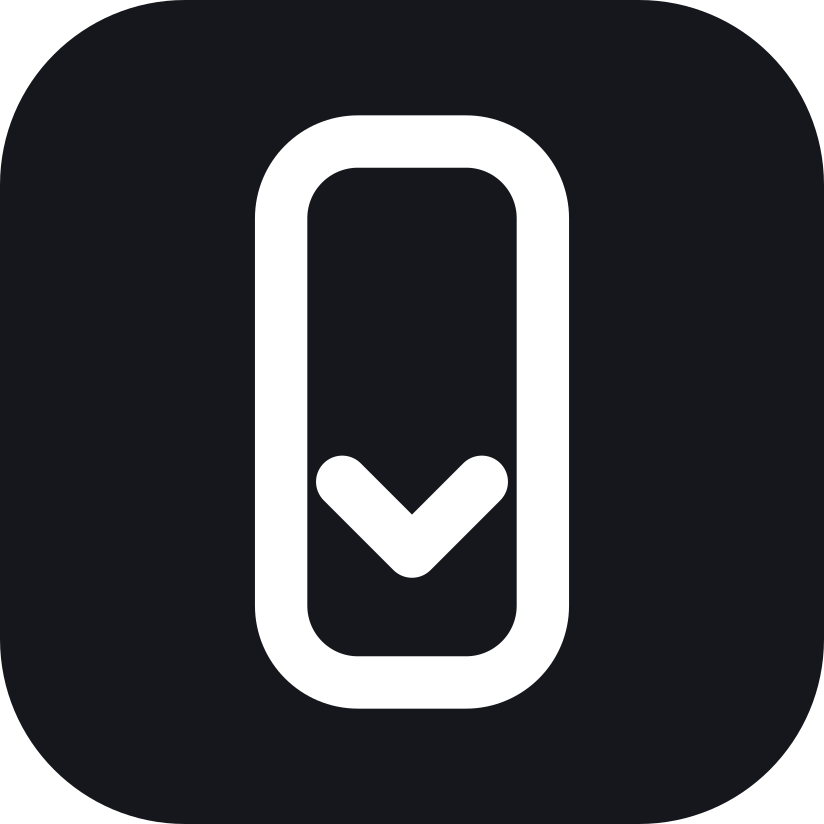

tallshotTallshot turns any scrolling window into one tall screenshot. Point at it, press the keys, and it scrolls to the bottom, stitches the pieces, saves a PNG and copies it to your clipboard. No box to draw. No editor to close.
Free and open source (MIT). macOS 14 Sonoma or later. Default hotkey ⌃⌥⇧⌘T.
Put the pointer over what you want: a web page, a chat thread, one pane of a split window, a Finder list. Tallshot picks just that pane (no app sidebar, no browser toolbar) and flashes a thin outline around it. Wrong pane? Press Esc.
It scrolls from where you are to the bottom, waiting for each step to settle. Sticky headers and chat input boxes show up once, not on every strip.
The PNG lands on your Desktop and on your clipboard. A small preview pop-up shows the height. Paste it straight into Claude, Slack or a doc.
Need the words too? Turn on PDF, Word or Markdown in Settings. The PDF is searchable, on Letter or A4 pages cut between lines; Word and Markdown keep headings, bullets, links and code. Text is read from the app or recognized on your Mac, never sent anywhere.
Terminals and documents give you their text. Point at Ghostty, Terminal, Notes, TextEdit or a code editor that shares all its text, and Tallshot copies it as Markdown and saves it (plus PDF and Word if those are on), with no scrolling and no pictures. The ChatGPT app keeps the whole conversation, so you get all of it as text, with You and ChatGPT before each turn. Browsers and most other chat apps share only what’s on screen, so they get a scrolling screenshot. Want a picture anyway? Use “Capture as Image” in the menu.
Press Esc, or touch the mouse or keyboard, to stop early and keep what was captured. Want the whole thing? Use “Capture from top” in the menu, or tallshot://capture?from=top from Raycast, Shortcuts or a script.
Tallshot needs Screen Recording and Accessibility to see and scroll the window. These rules keep that safe, and each one is checked by a test or by macOS.